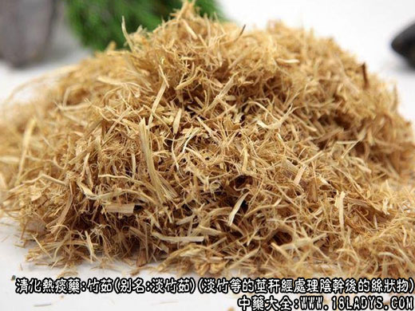

别名：淡竹茹、青竹茹。
来源：为禾本科多年生常绿植物淡竹毛竹等多种竹的茎秆，除去外皮后，用中间层刮成的丝状物，阴干后即成。多为栽培。
产地：主产于中南、华东、西南地区。
性状鉴别：呈不规则的乱丝团状。淡黄绿色。丝条长短不一，较细薄。质柔软轻松而有弹性。气微，味淡。
以丝细薄，淡黄绿色，松软，无硬厚刺片者为佳。
药理作用：清胃热，止呕吐。
炮制：生用或姜水喷炒。
性味：甘、微寒。
归经：入心、胃、大肠经。
功能：清热，除烦，消痰，止呕，凉血，止血，安胎。
主治：胃热呕吐，吐血，衄血，崩漏，胎动不安等症。
临床应用：
主治胃热呕吐，表现为口有臭气、喜寒恶热呕出酸苦物、舌苔黄腻，可见于急性胃炎、妊娠呕吐，以及热病过程中的反应，常配清热理气药如栀子、陈皮、半夏之类，方如竹茹汤。
对胃虚呃逆而挟热者，可在应用柿蒂基础上，加配竹茹、枇杷叶，或用橘皮竹茹汤。
对因痰热郁结而抑郁烦闷、失眠惊悸者，也适宜用竹茹去痰热，枳实理气，再用二陈汤加强祛痰作用，方如温胆汤，本方对治疗痰热上扰的神经官能症也有一定效果。
附：
1、竹茹与竹叶比较：两者都能清热，但竹茹偏于清胃热而止呕吐，竹叶偏于清心火而除烦热。
2、竹茹与半夏比较，两者都能止呕，但半夏化湿痰而止呕，竹茹清热痰而止呕。
3、竹茹经姜汁制后，更能增强止呕化痰之力。
用量：4.5～9g。
处方举例：
竹茹汤：竹茹9g，山栀子6g，陈皮6g，法半夏9g，甘草9g，生姜9g，大枣4枚水煎服。
桔皮竹茹汤（《金匮要略》）：橘皮9g，竹茹6g，党参9g，甘草3g，生姜12g，大枣6枚水煎服。
温胆汤（《千金方》）：竹茹9g，枳实3g，法半夏9g，陈皮6g，甘草3g，大枣5枚水煎服。